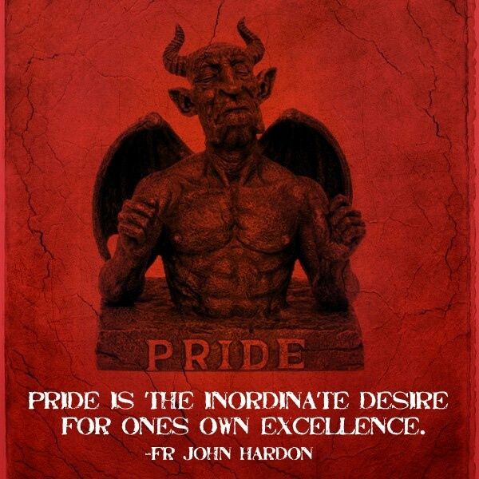
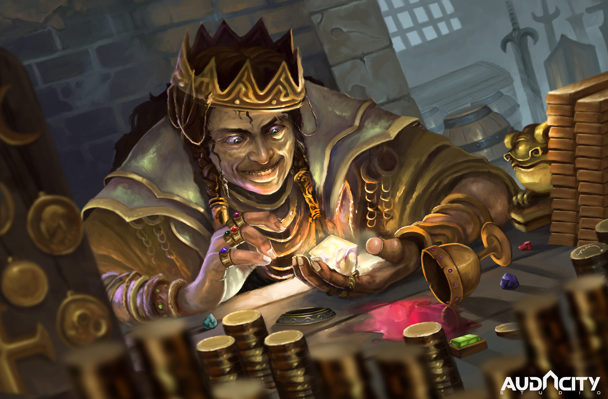
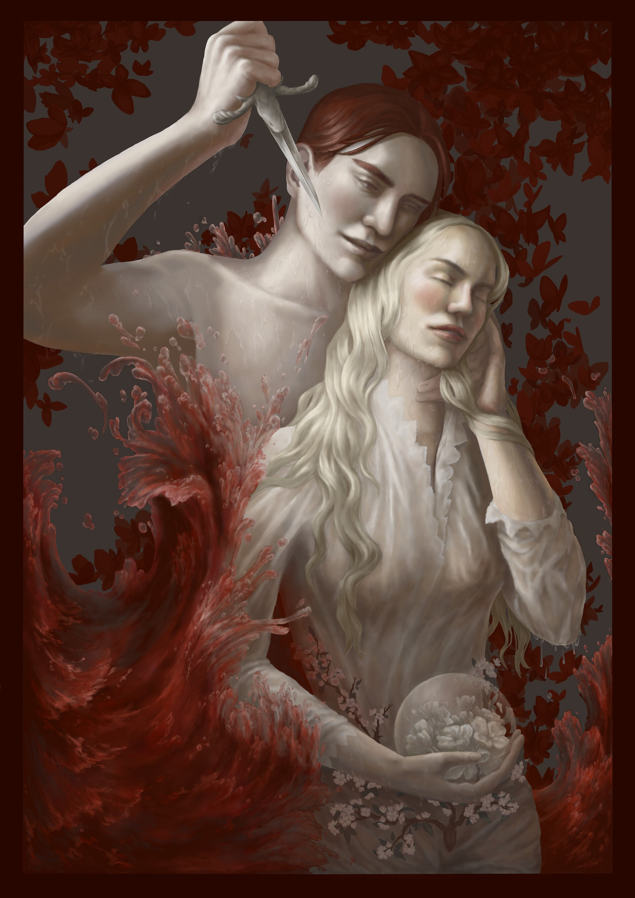
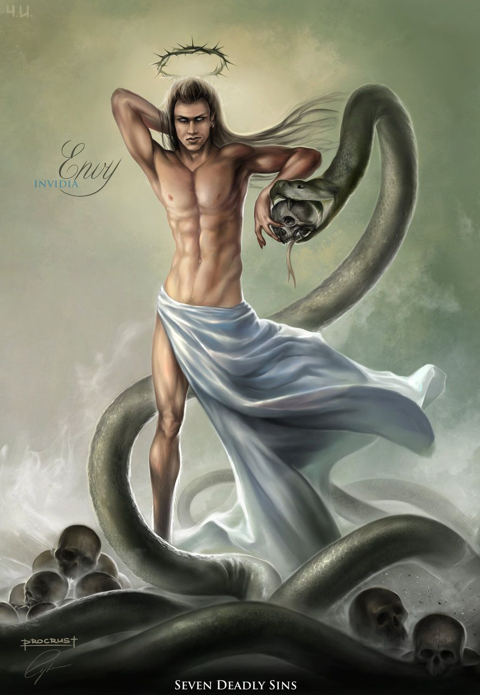
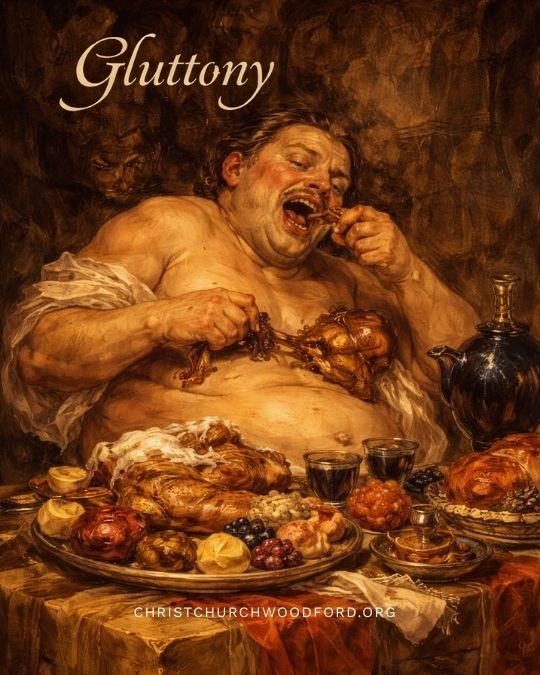
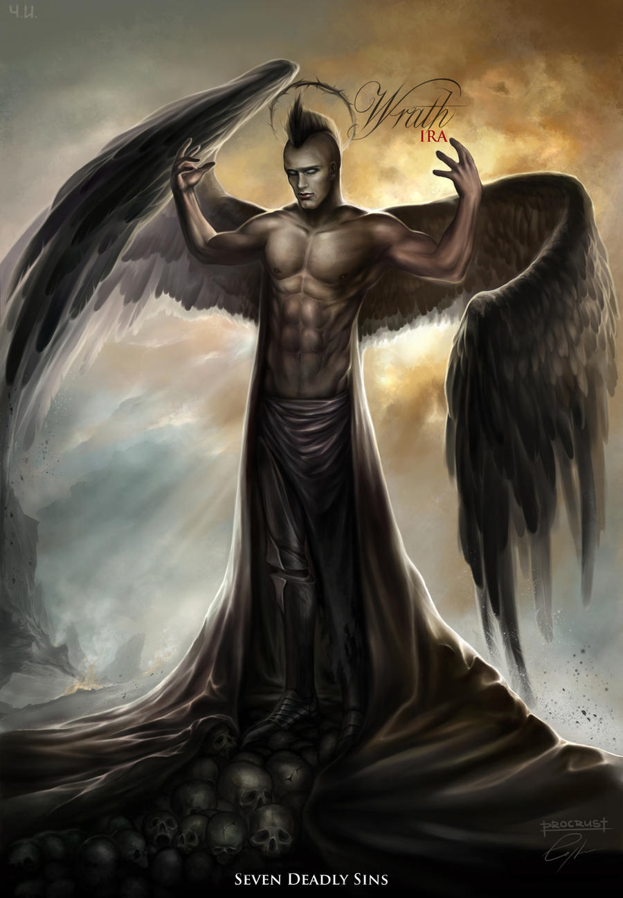
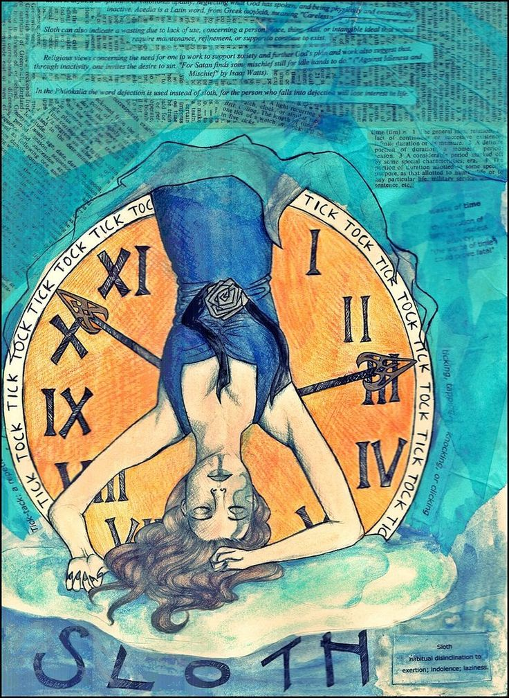

PRIDE

Pride (Kesombongan) adalah sikap merasa diri lebih baik, lebih hebat, atau lebih penting daripada orang lain. Orang yang sombong cenderung meremehkan orang lain, sulit menerima kritik, dan selalu ingin mendapatkan pujian. Dalam tradisi Kristen, kesombongan dianggap sebagai dosa paling berbahaya karena sering menjadi akar dari dosa-dosa lainnya.
GREED

Greed (Keserakahan) adalah keinginan yang berlebihan untuk memiliki harta, uang, kekuasaan, atau sesuatu yang dianggap menguntungkan. Seseorang yang serakah tidak pernah merasa puas dengan apa yang dimilikinya dan selalu menginginkan lebih banyak, meskipun kebutuhannya sebenarnya sudah terpenuhi.
LUST

Lust (Nafsu Birahi) adalah hasrat atau keinginan seksual yang berlebihan hingga menguasai pikiran dan tindakan seseorang. Dosa ini terjadi ketika seseorang lebih mementingkan pemuasan hawa nafsu dibandingkan menghormati martabat dan nilai moral dalam hubungan dengan orang lain.
ENVY

Lust (Nafsu Birahi) adalah hasrat atau keinginan seksual yang berlebihan hingga menguasai pikiran dan tindakan seseorang. Dosa ini terjadi ketika seseorang lebih mementingkan pemuasan hawa nafsu dibandingkan menghormati martabat dan nilai moral dalam hubungan dengan orang lain.
GLUTTONY

Gluttony (Kerakusan) adalah kebiasaan mengonsumsi sesuatu secara berlebihan, terutama makanan dan minuman. Kerakusan menunjukkan kurangnya pengendalian diri, di mana seseorang terus mencari kepuasan tanpa memperhatikan kebutuhan yang sebenarnya atau dampaknya terhadap kesehatan dan kehidupan.
WRATH

Wrath (Amarah) adalah kemarahan yang tidak terkendali dan dapat berkembang menjadi kebencian, dendam, atau tindakan yang merugikan orang lain. Meskipun marah merupakan emosi yang wajar, wrath terjadi ketika kemarahan tersebut menguasai diri seseorang hingga mendorong perilaku yang destruktif.
SLOTH

Sloth (Kemalasan) adalah sikap malas atau enggan menjalankan tanggung jawab yang seharusnya dilakukan. Kemalasan tidak hanya berarti tidak mau bekerja, tetapi juga kurangnya motivasi untuk berkembang, belajar, atau melakukan hal-hal baik yang dapat memberikan manfaat bagi diri sendiri maupun orang lain.